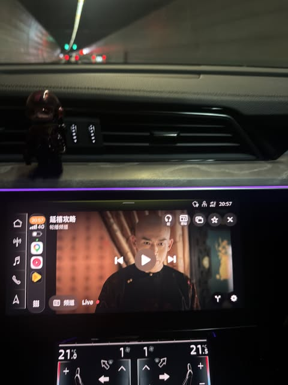
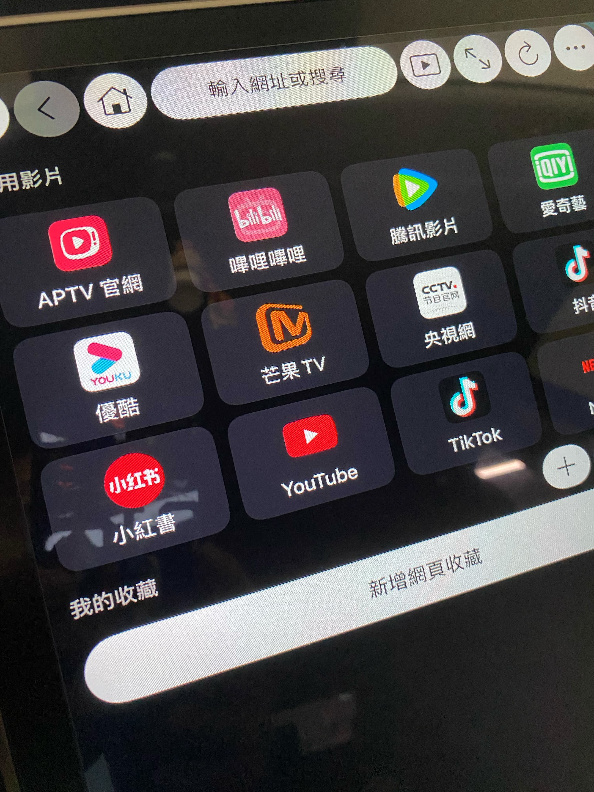

Threads｜CarPlay 看電視進階線索：途播與播放清單使用備忘

一句話摘要
Threads 使用者 @shang.chou.tw 補充 Apple CarPlay 看電視的實作線索：下載「途播」，再將貼文提供的播放清單網址複製貼上；作者提醒畫質不錯，但會很吃手機訊號。
原貼重點
原文可見內容：
> carplay真的可以看電視耶～
> 畫質不錯，但是很吃手機訊號
> 1下載途播
> 2將網址複製貼上（網址在內文
可見互動資訊：Threads 擷取時顯示約 6,085 次瀏覽、67 讚、11 回覆、2 轉貼、74 分享／互動指標。回覆區也有作者補充：「複製上面那排，不用點進去喔」。
為什麼值得保存
- 這則貼文比前一筆「CarPlay 可以看電視」提供更具體的實作關鍵字：途播、播放清單網址、手機訊號品質。
- 可作為未來研究「CarPlay 影音 App／IPTV 播放清單／車機瀏覽器」時的線索索引。
- 作者實測提醒「畫質不錯但吃訊號」，可納入後續測試項目：4G/5G 穩定度、延遲、耗電、熱量與跨區可用性。
風險與查證筆記
貼文連到一份公開文字播放清單，擷取時 HTTP 狀態為 200、Content-Type 為 text/plain、大小約 84KB，內容看起來像多個影音頻道名稱與串流位址。由於來源授權、內容版權、長期可用性與資安風險都不明，本知識庫只保存「有這個線索」與查證方向，不鏡像該清單內容，也不建議直接公開轉載完整清單。
實作或教學前應確認：
- 「途播」App 的來源、隱私權、權限要求與是否仍可在 iPhone／CarPlay 環境穩定使用。
- 播放清單是否有合法授權；若是未授權 IPTV 來源，不應做成公開教學或散播連結。
- 車機是否支援對應顯示方式，是否需要停車狀態或特定設備。
- 行車安全與所在地法規：駕駛中觀看影片或電視會造成分心，應限於停車、充電、露營或乘客觀看。
可延伸成的知識庫任務
- 建立「CarPlay 影音娛樂工具比較」：途播、車機盒、HDMI、瀏覽器 App、AirPlay／鏡像等方案。
- 設計「停車休息娛樂」使用情境，而不是行車中觀看。
- 若要課程或社群分享，建議改寫成「車用科技安全查證案例」：如何從社群貼文辨識工具線索、版權風險與安全限制。
2026-11-07 補充：另一則 APTV 與 YouTube 個案

圖片：Threads 作者 @cardboard_fiber_craft_stone 的公開壓縮圖片，畫面顯示瀏覽器捷徑與 YouTube 圖示；重用授權未確認。圖示不是實際播放成功的證據。
原始分享；固定貼文。作者稱途播較慢，改用 APTV 後在 CarPlay 點「快速」再點「瀏覽器」，YouTube 播放流暢；回覆稱自己看 YouTube 與 B 站時沒有碰到買斷費，並曾等得來速時給孩子看。這是作者個案和主觀體驗，不代表任何車機、版本或內容都可用；其他留言另稱有空白或不能使用，也未獨立核實。
**辨識與費用。** 原帖第一張圖的紅色電視播放圖示與 台灣 App Store 的 APTV（ID 1630403500） 圖示一致，顯示開發者 Suzhou Xiying Guangnian Technology Co., Ltd；這是圖片比對，不是取得作者安裝清單或版本的確證。另有 Ion Danilov 的同名近似產品，不能混為一談。App Store 2026-11-07 顯示免費下載、提供 App 內購買；未取得完整品項、金額或此功能是否收費，不可推論全功能免費。版本 1.5.13 的商店說明列 M3U、串流與 iCloud 同步等，但未明確確認本例的 CarPlay 瀏覽器或 YouTube 播放支援，因此不能以此保證現行功能、車型或流暢度。
**Apple 規範與安全。** Apple CarPlay 開發者說明表示影片 App 可在支援的車輛停車時播放；支援 CarPlay 不等於每一車型都支援影片，也不能由官方一般架構推定此個案的實作或行駛時阻擋機制。駕駛行車時勿觀看或操作，應先安全停妥並遵守所在地法規；乘客觀看也須避免影響駕駛。第三方瀏覽器輸入帳密前需查隱私政策、授權和服務條款，避免在不熟悉的介面登入重要帳號；影片、網路或第三方訂閱可能另有費用。
**證據與限制。** 原帖公開輪播四張均已檢視：圖示、「快速」、「瀏覽器」、瀏覽器捷徑；僅最後一張保存並公開，其他三張未歸檔。畫面並非連續錄影，不能證明完整播放或實際駕駛狀態。本次未安裝、登入、付款、連接車機或實測；來源記錄見 `source-archive/2026-11-07-threads-aptv-carplay.json`。
原始連結
分享連結：
https://www.threads.com/share/__Ko-6jFx/
Canonical：